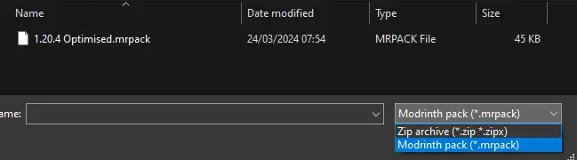

MKSoc Minecraft Server
Information about the Mario Kart SOC Minecraft Server
Minecraft version: 1.20.4 (Java) / 1.20.72 (Bedrock)
IP Address: mksoc.minecraft.party
Port (Java): 25565 (default) |
Port (Bedrock): 7037
Max Render distance: 22 Chunks
Simulation Distance: 12 Chunks
Difficulty: Hard


#Mods
Below are the minecraft mods I use for a 1.20.4
Fabric Minecraft instance.
I use PrismLauncher
to manage instances and download mods, but a normal Fabric loader instance
(launched from the regular Minecraft launcher) will work fine (as long as you know
where the place mods manually).
For either the launcher, or a standalone
fabric loader instance,
you will need Java (version 17) installed on your computer, which you
can find here:
https://adoptium.net/en-GB/temurin/releases/?version=17
Note: On Macs with Intel processors, you need to install the x64 version
of Java, on Macs with Arm 64 (M1) processors, you need to install the
Arm 64 (aarch64) version of Java.
#Mod List
These mods mainly focus on optimisation (improving game FPS) and
quality of life (qol) features.
Mods in (brackets) are API mods
that are required for other mods to work.
This mod list may be updated from time to time, please check back occasionally!
#Downloading Mods
These mods can be downloaded from
https://modrinth.com/. Or
alternatively by importing the mod pack into your favourite
launcher (like PrismLauncher).
#Modpack Template
The modpack template can be downloaded here:
1.20.4 Optimised.mrpack.
To import it into PrismLauncher, select 'Add Instance/Create Instance',
then choose the 'Import' tab and click 'Browse'.

Locate the '1.20.4 Optimised.mrpack' file and open it. Then press 'OK' and the
correct mods will be downloaded!

Make sure to select 'Modrinth pack (*.mrpack)' in the dialogue
for the file to appear.
The instance is now ready to play!
Note: You may get an error about 'Java version incompatibility',
skipping the check should solve this issue.
#Mod Configs
My mods config folder: config.zip.
This file has configuration files for the above mods. Use this
if you downloaded mods manually. Extract the contents of this
folder to your Minecraft directory, within the 'config' folder.
#options.txt
Here is my options.txt file.
version:3700
autoJump:false
operatorItemsTab:false
autoSuggestions:true
chatColors:true
chatLinks:true
chatLinksPrompt:true
enableVsync:true
entityShadows:true
forceUnicodeFont:false
discrete_mouse_scroll:false
invertYMouse:false
realmsNotifications:true
reducedDebugInfo:false
showSubtitles:true
directionalAudio:false
touchscreen:false
fullscreen:false
bobView:true
toggleCrouch:false
toggleSprint:false
darkMojangStudiosBackground:true
hideLightningFlashes:false
hideSplashTexts:false
mouseSensitivity:0.5
fov:0.5
screenEffectScale:1.0
fovEffectScale:1.0
darknessEffectScale:1.0
glintSpeed:0.5
glintStrength:0.75
damageTiltStrength:1.0
highContrast:false
narratorHotkey:false
gamma:1.0
renderDistance:18
simulationDistance:12
entityDistanceScaling:1.0
guiScale:2
particles:0
maxFps:260
graphicsMode:1
ao:true
prioritizeChunkUpdates:0
biomeBlendRadius:2
renderClouds:"true"
resourcePacks:["vanilla","fabric","file/Default-Dark-Mode-1.20.2+-2023.11.0.zip"]
incompatibleResourcePacks:[]
lastServer:mksoc.minecraft.party
lang:en_us
soundDevice:""
chatVisibility:0
chatOpacity:1.0
chatLineSpacing:0.0
textBackgroundOpacity:0.0
backgroundForChatOnly:true
hideServerAddress:false
advancedItemTooltips:false
pauseOnLostFocus:true
overrideWidth:0
overrideHeight:0
chatHeightFocused:1.0
chatDelay:0.0
chatHeightUnfocused:0.44014084507042256
chatScale:1.0
chatWidth:1.0
notificationDisplayTime:1.0
mipmapLevels:4
useNativeTransport:true
mainHand:"right"
attackIndicator:1
narrator:0
tutorialStep:none
mouseWheelSensitivity:1.0
rawMouseInput:true
glDebugVerbosity:1
skipMultiplayerWarning:true
skipRealms32bitWarning:false
hideMatchedNames:true
joinedFirstServer:true
hideBundleTutorial:false
syncChunkWrites:true
showAutosaveIndicator:true
allowServerListing:true
onlyShowSecureChat:false
panoramaScrollSpeed:1.0
telemetryOptInExtra:false
onboardAccessibility:false
key_key.attack:key.mouse.left
key_key.use:key.mouse.right
key_key.forward:key.keyboard.w
key_key.left:key.keyboard.a
key_key.back:key.keyboard.s
key_key.right:key.keyboard.d
key_key.jump:key.keyboard.space
key_key.sneak:key.keyboard.left.shift
key_key.sprint:key.keyboard.left.control
key_key.drop:key.keyboard.q
key_key.inventory:key.keyboard.e
key_key.chat:key.keyboard.t
key_key.playerlist:key.keyboard.tab
key_key.pickItem:key.mouse.middle
key_key.command:key.keyboard.slash
key_key.socialInteractions:key.keyboard.p
key_key.screenshot:key.keyboard.f2
key_key.togglePerspective:key.keyboard.r
key_key.smoothCamera:key.keyboard.unknown
key_key.fullscreen:key.keyboard.f11
key_key.spectatorOutlines:key.keyboard.unknown
key_key.swapOffhand:key.keyboard.f
key_key.saveToolbarActivator:key.keyboard.x
key_key.loadToolbarActivator:key.keyboard.z
key_key.advancements:key.keyboard.l
key_key.hotbar.1:key.keyboard.1
key_key.hotbar.2:key.keyboard.2
key_key.hotbar.3:key.keyboard.3
key_key.hotbar.4:key.keyboard.4
key_key.hotbar.5:key.keyboard.5
key_key.hotbar.6:key.keyboard.6
key_key.hotbar.7:key.keyboard.7
key_key.hotbar.8:key.keyboard.8
key_key.hotbar.9:key.keyboard.9
key_key.wi_zoom.zoom:key.keyboard.c
key_key.entityculling.toggle:key.keyboard.unknown
key_key.modmenu.open_menu:key.keyboard.unknown
key_iris.keybind.reload:key.keyboard.semicolon
key_iris.keybind.toggleShaders:key.keyboard.backslash
key_iris.keybind.shaderPackSelection:key.keyboard.apostrophe
soundCategory_master:1.0
soundCategory_music:1.0
soundCategory_record:1.0
soundCategory_weather:1.0
soundCategory_block:1.0
soundCategory_hostile:1.0
soundCategory_neutral:1.0
soundCategory_player:1.0
soundCategory_ambient:1.0
soundCategory_voice:1.0
modelPart_cape:true
modelPart_jacket:true
modelPart_left_sleeve:true
modelPart_right_sleeve:true
modelPart_left_pants_leg:true
modelPart_right_pants_leg:true
modelPart_hat:true